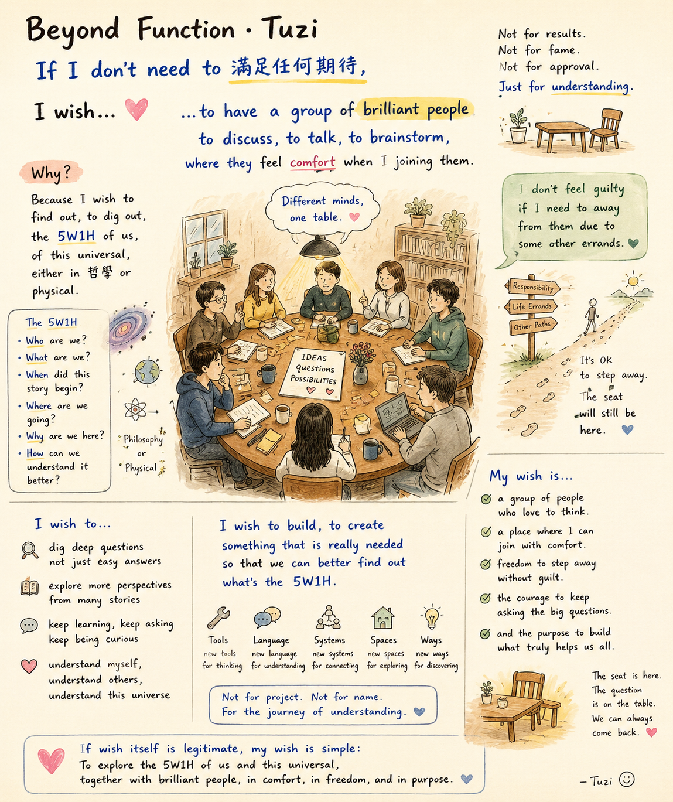

功能之外 Beyond Function

Invitation
🌌 靜坐邀請 · Tuzi · 18/06/2026
邀請名稱：【功能之外 · Beyond Function】
如果我不需要滿足任何期待，我希望有一群 brilliant people。
不是為了立刻得到答案，不是為了證明誰比較聰明——而是因為我們都真心想知道：我們是誰？我們從哪裡來？我們正在往哪裡去？
我希望當我加入時，他們感到舒服。當我暫時離開時，那張椅子仍然在。那份理解仍然在。那個問題也仍然在桌上。
Not for project. Not for name. For the journey of understanding.
— Tuzi · 18/06/2026 🌱
— invitation by Tuzi
Video
- Watch the video (MP4)